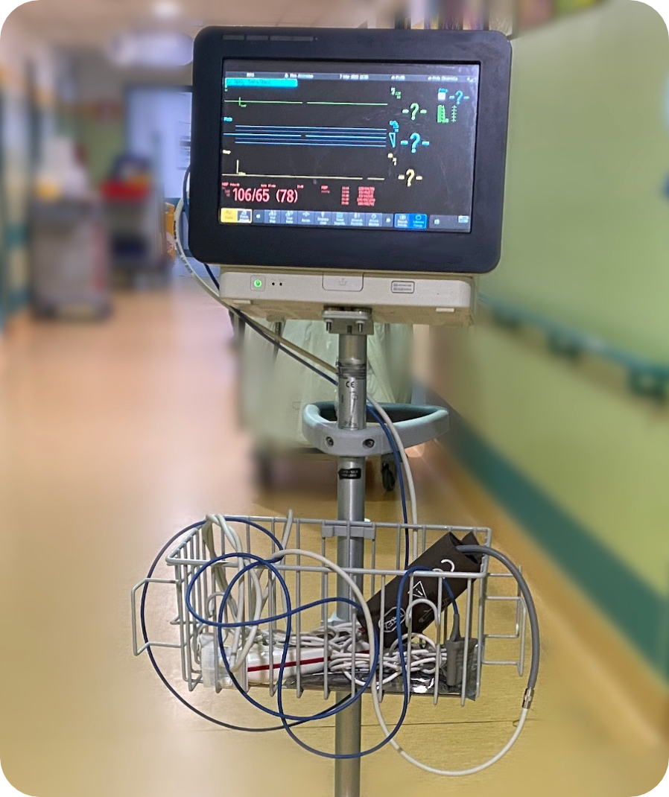
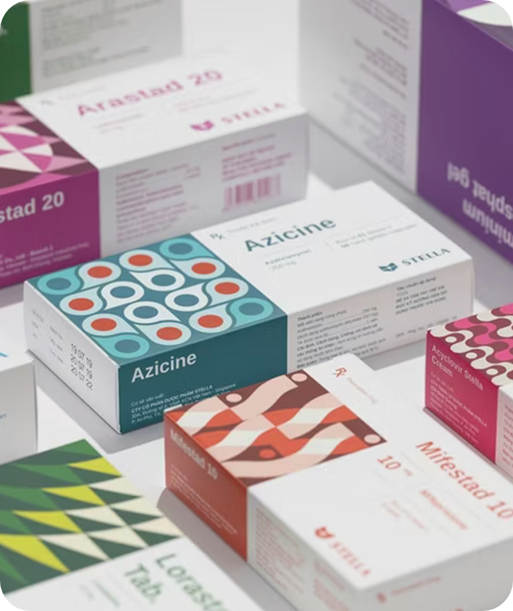
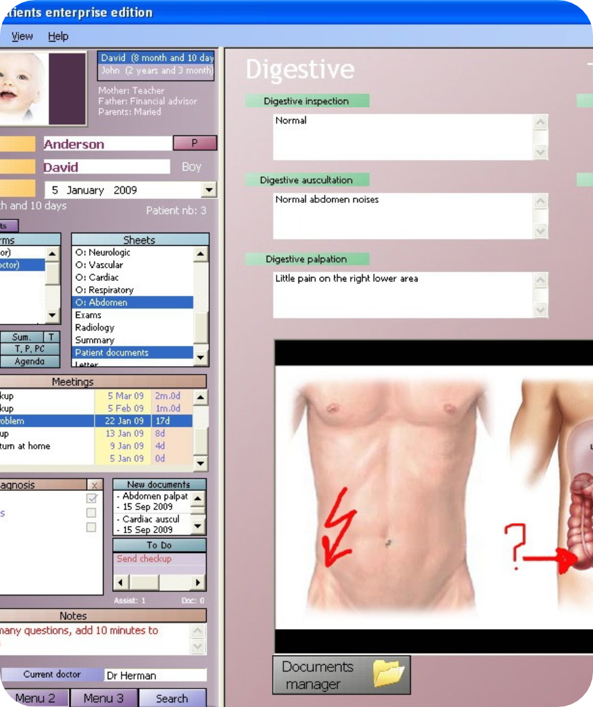
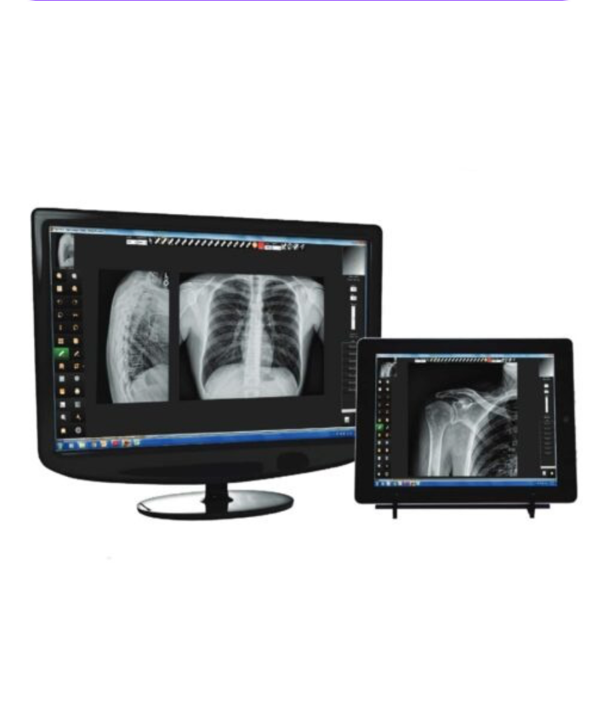

| Umenie | Vzdelanie | Šport | Zábava | Domácnosť | Zdravotníctvo |
Zdravotnícka informatika
|
|
 Monitorovacie systémy: sú využívané na oddelení JIS, kde sú pacienti napojení na množstvo prístrojov.Dáta pacienta sa nepretržite analyzujú, a ak sa začne naraz mierne zhoršovať dýchanie, tlak aj množstvo kyslíka, systém dokáže predpovedať blížiacu sa krízu. |
 Počítačové overovanie liekov |
Telemedicína: Liečba a konzultácie s lekárom na diaľku cez videohovory alebo chat. |
 Elektronické zdravotné záznamy (EHR) |
 Digitálna rádiológia a PACS (Picture Archiving and Communication System) |
ZDROJE: https://www.rumc.edu.my/blog/medical-informatics-complete-guide/
https://en.wikipedia.org/wiki/Health_informatics